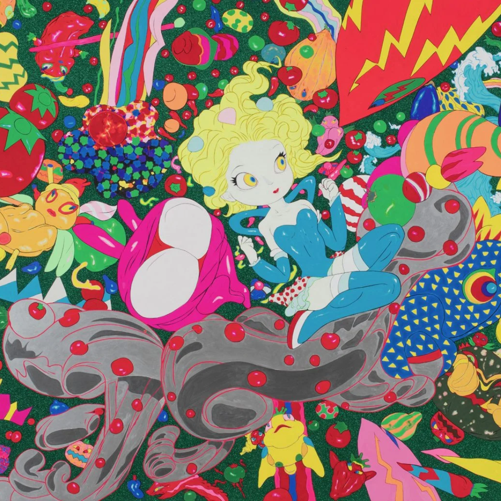

Exposições Farol Santander:

Conheça a magia de Yoshitaka Amano
A arte de Yoshitaka Amano representa
um convite à transcendência, abrindo um portal para um universo onde o real e o fantástico se encontram, e o
sonho se confunde com a realidade. Suas obras, que transcendem a mera visualidade, são verdadeiros convites
para explorar mundos desconhecidos e refletir sobre a complexidade da existência humana.
Site oficial